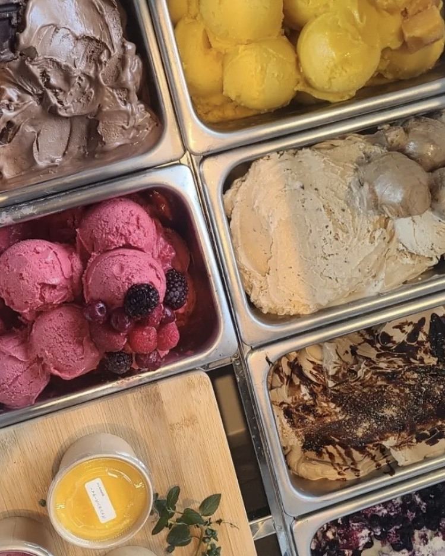
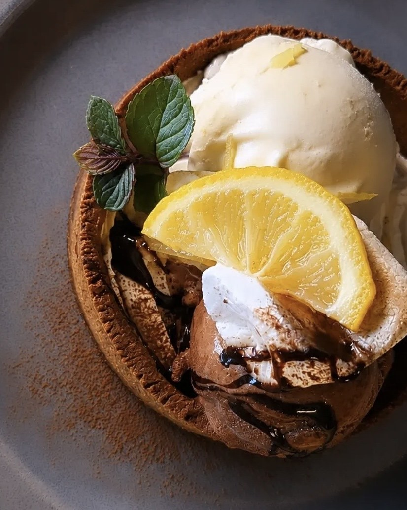
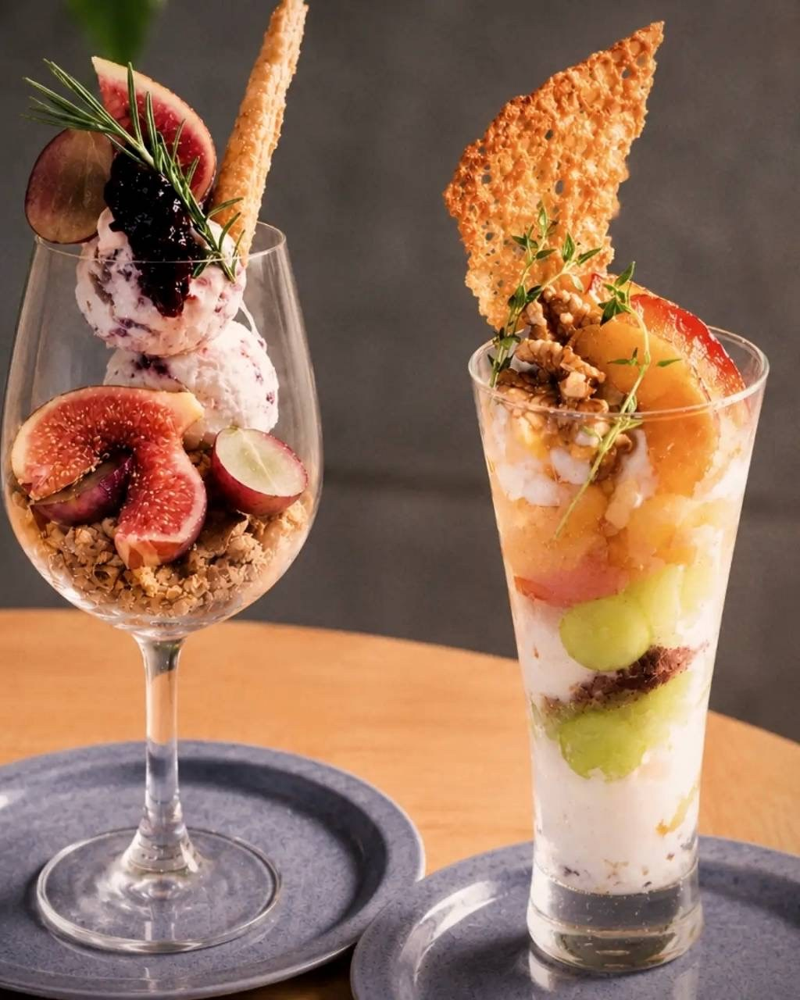
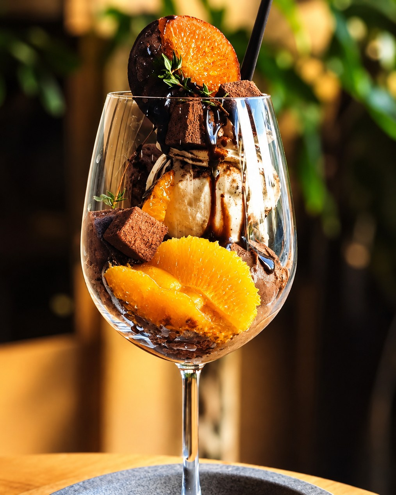
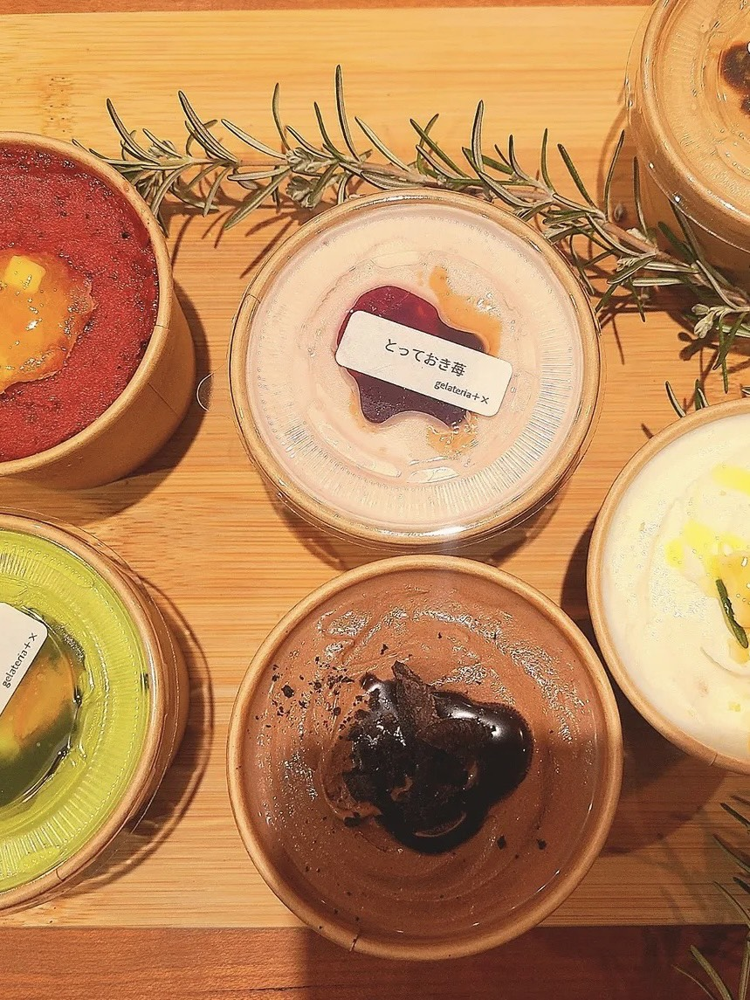
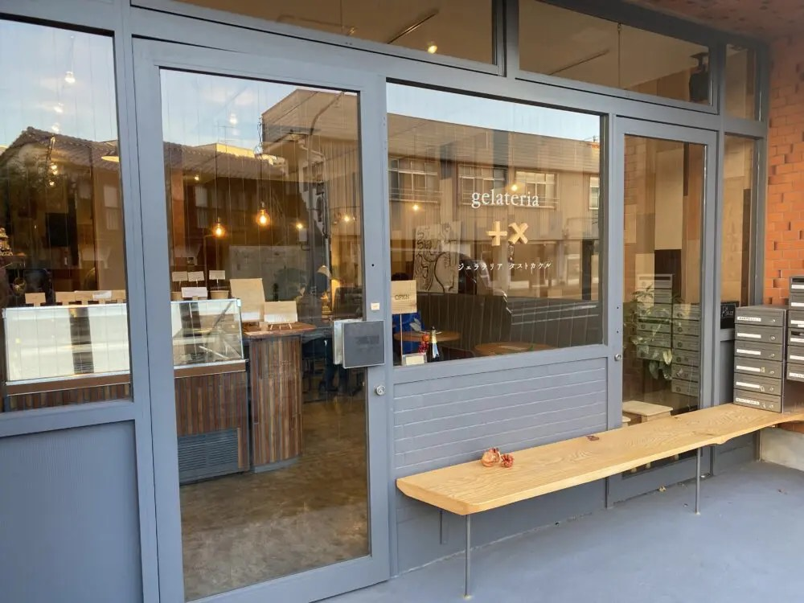

01Concept
素材の味と香りを、
たして、かけて。
店名の「＋×（タストカケル）」には、味と香りの“たし算”と“かけ算”という意味をこめました。
店主は、鳥取市内のホテルのレストランで8年間ソムリエとして働いてきました。ワインと料理を合わせるように、素材と素材を組み合わせて、ひとつの味をつくる。その経験を、ジェラートで表現しています。
季節の素材や、鳥取ならではの食材を使い、素材ごとに温度や練り方を変えて、その素材らしい風味を引き出します。
子どもから大人まで、食べることの楽しさを感じてほしい。そんな思いで、2022年にお店をはじめました。

02Sweets & Wine
ジェラートも、ワインも。
どちらも営業時間中（15:00〜22:00）いつでもお楽しみいただけます。
Sweets
季節を味わうスイーツ
常時8種類のジェラートに、パフェやタルト。季節の素材を組み合わせた、ここでしか出会えない味を。
Wine
ワインと、ジェラートを
ソムリエが選ぶワインと、ジェラートやパフェのペアリングを楽しめます。
03Parfait & Tart
ジェラートでつくる、
パフェやタルト。
自家製のジェラートを主役に、季節のフルーツや焼き菓子を重ねて。ひとつの器の中で、味と香りのたし算かけ算を楽しめます。



内容は季節によって変わります。最新のパフェとタルトは Instagram でお知らせしています。
Today's Flavors
今日のフレーバーは Instagram で
その日のフレーバーや新作、臨時休業のお知らせを毎日投稿しています。
@gelateriatasutokakeru
04Take out
おうちでも、
ジェラートを。
お好きなフレーバーを選んで、5個・10個のセットでお持ち帰りいただけます。
※価格は選ぶフレーバーによって変わります。
ご予約は、店頭または Instagram の DM からお気軽にどうぞ。
05Information
店舗情報
- 店名
- gelateria +×ジェラテリア タストカケル
- 住所
- 鳥取県鳥取市今町2-201JR鳥取駅から徒歩5分
- 営業時間
- 15:00〜22:00
- 定休日
- 月曜・火曜・水曜臨時休業は Instagram でお知らせします
- 席数
- イートイン 10席
- お支払い
- 現金・クレジットカード・交通系IC・電子マネー
- 駐車場
- 専用駐車場はありませんお店の隣のコインパーキングをご利用ください
